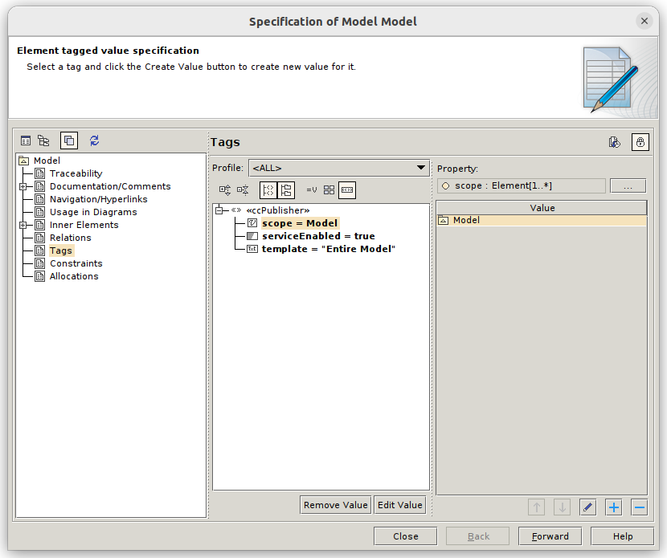

Project setup
The service scans the resources available in Teamwork Cloud, searching those that meet the following conditions:
<<ccPublisher>> stereotype applied to the top level Model
Tag serviceEnabled (<<ccPublisher>>) is set to true or is unset
<<ccPublisher>> stereotype is provided within the ccPublisher.mdzip project file located in the resources folder.
Include the profile
The profile can be included by importing the provided mdzip file:
Open the target server project
Select File -> Use Project -> Use Local Project
Select From the file system and press the three dots to select the mdzip file
Push Continue
Configure the parameters
Unlock the Model (root node of the loaded server project)
Right mouse on Model -> Stereotype
Type cc, <<ccPublisher>> should pop up: mark the checkbox and press Apply
Open the specification panel of Model and select Tags on the left pane
Create a value for serviceEnabled, setting it to true
Create a value for template, typing Entire Model (or any other template available)
Create a value for scope, selecting the package or packages that should be exported to CC
The resulting tags should look like:
Commit and head back to the service
Once done, commit to push the changes to the server.
The list of available projects requires a rescan to incorporate the newly added resource. Press the button Rescan profiles from the Queue tab.